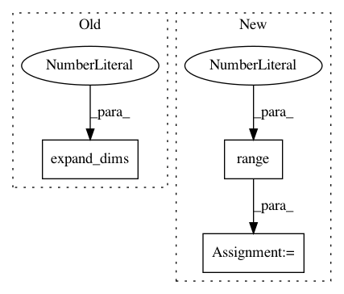

62cea7fcfcc9e20b784e08bddce5dc69b9578ef4,tensorforce/core/memories/replay.py,Replay,tf_retrieve_sequences,#Replay#Any#Any#,125
Before Change
// ???????
// sequence_indices = [tf.range(start=indices[n], limit=(indices[n] + sequence_length)) for k in range(n)]
// sequence_indices = [indices[k: k + sequence_length] for k in tf.unstack(value=tf.range(start=0, limit=n), num=n)]
sequence_indices = tf.expand_dims(input=tf.range(start=0, limit=n), axis=1) + tf.expand_dims(input=tf.constant(value=list(range(sequence_length))), axis=0)
sequence_indices = tf.reshape(tensor=sequence_indices, shape=(n * sequence_length,))
// sequence_indices = tf.concat(values=sequence_indices, axis=0) // tf.stack !!!!!
terminal = tf.gather(params=self.memories["terminal"], indices=indices)
sequence_indices = tf.boolean_mask(tensor=sequence_indices, mask=tf.logical_not(x=terminal))
After Change
// sequence_indices = [tf.range(start=indices[n], limit=(indices[n] + sequence_length)) for k in range(n)]
// sequence_indices = [indices[k: k + sequence_length] for k in tf.unstack(value=tf.range(start=0, limit=n), num=n)]
sequence_indices = tf.expand_dims(input=tf.range(start=0, limit=n), axis=1)
sequence_indices += tf.expand_dims(input=tf.range(start=0, limit=sequence_length), axis=0)
sequence_indices = tf.reshape(tensor=sequence_indices, shape=(n * sequence_length,))
// sequence_indices = tf.concat(values=sequence_indices, axis=0) // tf.stack !!!!!
terminal = tf.gather(params=self.memories["terminal"], indices=indices)
sequence_indices = tf.boolean_mask(tensor=sequence_indices, mask=tf.logical_not(x=terminal))
In pattern: SUPERPATTERN
Frequency: 5
Non-data size: 3
Instances
Project Name: reinforceio/tensorforce
Commit Name: 62cea7fcfcc9e20b784e08bddce5dc69b9578ef4
Time: 2019-01-05
Author: alexkuhnle@t-online.de
File Name: tensorforce/core/memories/replay.py
Class Name: Replay
Method Name: tf_retrieve_sequences
Project Name: sony/nnabla-examples
Commit Name: e8c7d7ff716ed99b3045bbaf004c8b5675e21cc6
Time: 2019-07-11
Author: andrew.shin@sony.com
File Name: GANs/pix2pix/generator.py
Class Name:
Method Name: label_to_image
Project Name: reinforceio/tensorforce
Commit Name: 62cea7fcfcc9e20b784e08bddce5dc69b9578ef4
Time: 2019-01-05
Author: alexkuhnle@t-online.de
File Name: tensorforce/core/memories/latest.py
Class Name: Latest
Method Name: tf_retrieve_sequences
Project Name: tensorflow/agents
Commit Name: 6f3a917e94edf2b96e4c151d698495799be5c9de
Time: 2020-06-26
Author: summeryue@google.com
File Name: tf_agents/agents/sac/sac_agent.py
Class Name: SacAgent
Method Name: alpha_loss
Project Name: kevinzakka/recurrent-visual-attention
Commit Name: 520e8fb57b890a7249334d9e90c9ad209d0b849f
Time: 2018-02-10
Author: kevinarmandzakka@gmail.com
File Name: modules.py
Class Name: retina
Method Name: foveate